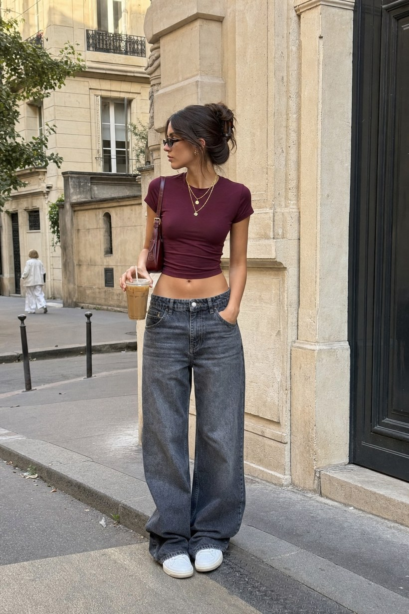
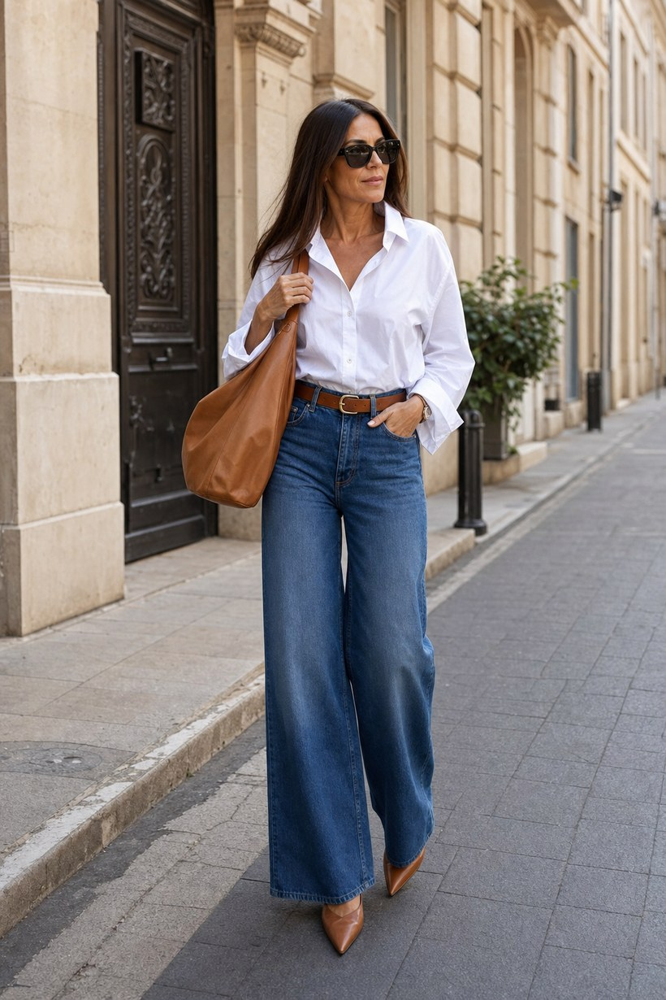
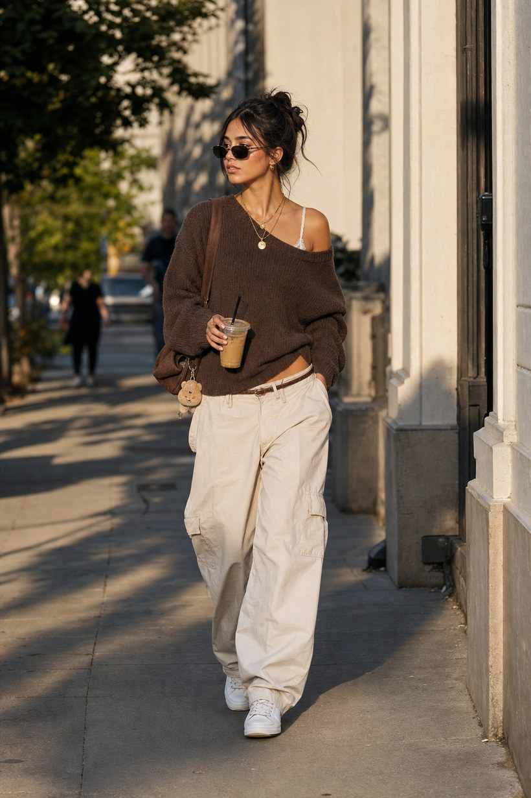
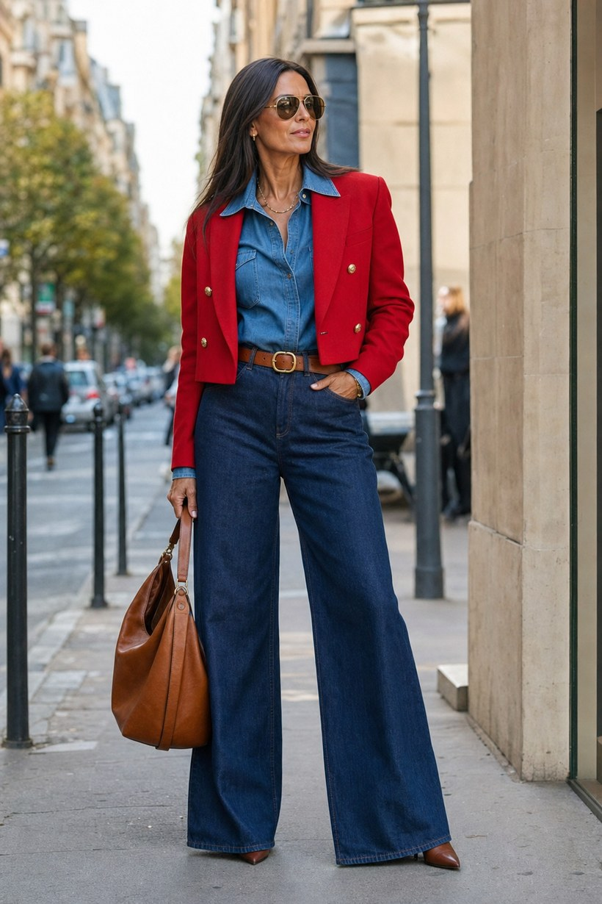
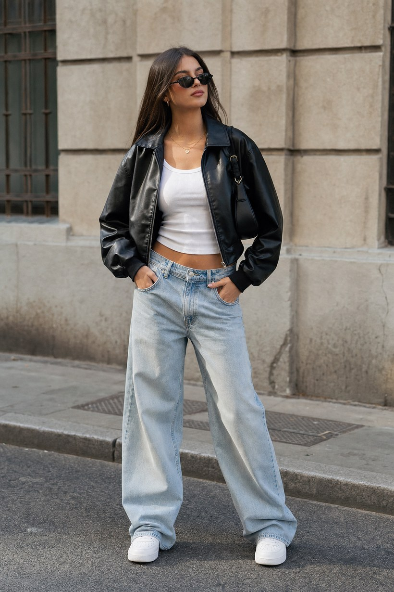
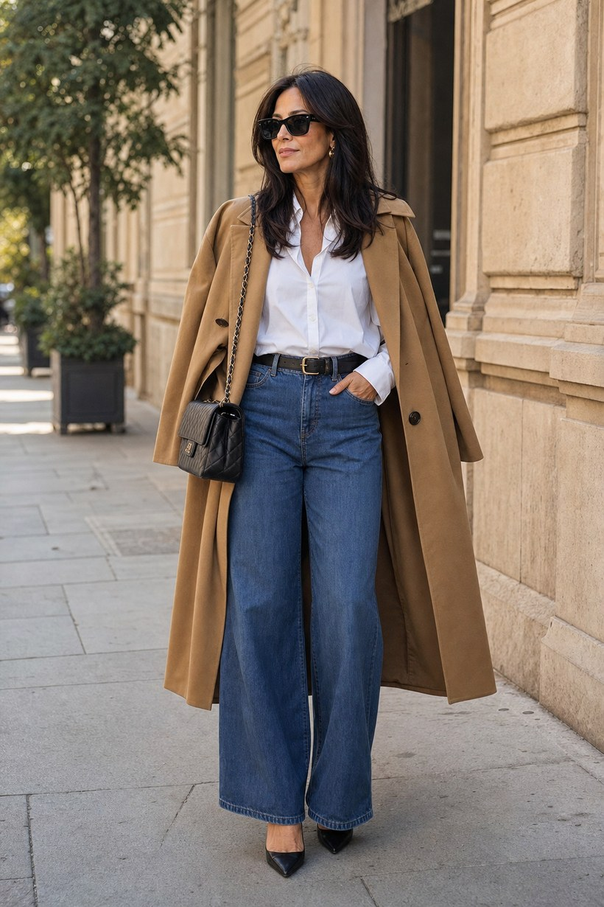

Metka Albreht — stilski koncept
Iste široke kavbojke pri 21 in pri 45. Spremeni se vse okrog njih. Levo mlado in sproščeno: kratki topi, superge, skuštrana figa. Desno zrelo in urejeno: srajca ali suknjič ali plašč, prava usnjena torba, peta, spuščeni lasje. Isti trend, drugo desetletje.
21 let

45 let

Bela srajca, lepa usnjena torba in peta spremenijo iste široke kavbojke iz "undone" v urejeno.
21 let

45 let

Pogumen rdeč suknjič čez jeans. Barva in kroj naredita razliko v zrelost.
21 let

45 let

Kamel plašč čez ramena in koničasta peta. Iste kavbojke, odrasla drža.